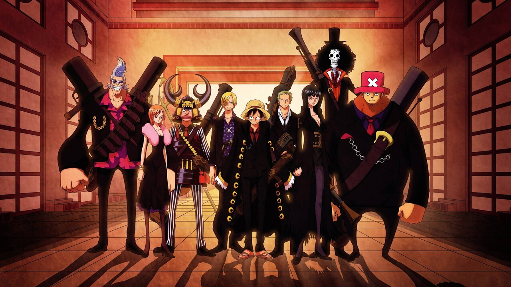

One Piece is a Japanese manga series written and illustrated by
Eiichiro Oda.
The series follows the story of Monkey D. Luffy, a boy whose body
gained the properties of rubber after unintentionaly eating a
devil fruit.
With his pirate crew the
Straw Hat Pirates
, Luffy explores the Grand Line
in search of the deceased
King of the pirates ultimate treasure Known as the One Piece
in order to become the next King of the pirates.
Broadcast over 1000 individual episodes, alongside a number of TV specials and a full fourteen theatrical films,
One Piece can be daunting for newcomers to dive into the lengthy story.
One Piece is set in a world full of pirates and buccaneering. It follows Monkey D. Luffy, a young man who gained
superpowers of a sort after eating the magical Devil Fruit. This fruit gave Luffy the ability to stretch his limbs
like rubber, making him a highly durable and thoroughly competent fighter. Luffy embarks on a quest to become King
of the Pirates by finding a mystical treasure called the One Piece, raking up both friends and foes along the way.
One Piece is split into sagas. These sagas cover overarching plot points and critical events in the overall story.
Inside these sagas are other, smaller sagas, each of which are further broken down into story arcs.
Where these story arcs start and end is up for debate. But in the eyes of most fans, a new arc begins when the Straw
Hat Pirates
land on an island and ends when they leave it. This is not always clear-cut, unfortunately, so some fans start and
end arcs on slightly different chapters.
